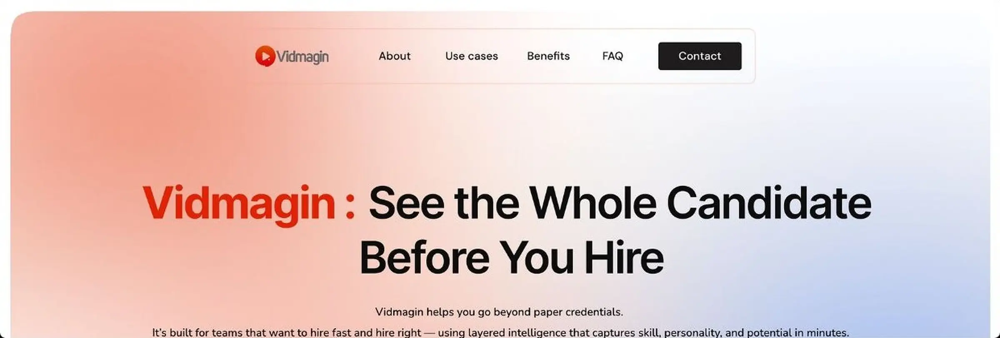

Lead with comprehension
Introduce the product value before deeper detail.
Responsive website redesign focused on page structure and product communication.

Public-facing Vidmagin website screenshot.
The website needed a clear way to introduce a broad hiring product to prospective teams.
I designed responsive page layouts, organized information hierarchy and navigation, and developed consistent visual patterns for the proposed website experience.
Introduce the product value before deeper detail.
Use page hierarchy to guide a visitor toward relevant information.
Adapt layout and repeated elements for responsive handoff.
The work shows design direction and responsive structure; it does not claim measured conversion or usability results.
Before-and-after context and implementation feedback would strengthen the case.